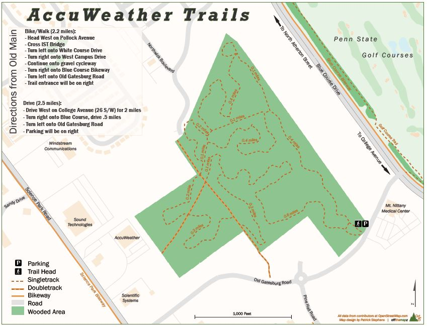

This is a small screenshot of my pet project, the Jim Thorpe Recreation Map. This is also my undergradute thesis project. My thesis consists of creating a framework to design outdoor recreation maps quickly and efficiently using open source data. Aside from doing research on big data and open source data, I have designed this map from scratch. I plan to try to have it printed by Fall of 2016. The final product will be a static folded map, 36 X 24 inches, water-proof, and at a scale of 37,000. It includes a wide variety of outdoor and historic features such as: canal locks, rapid classes, old mines, vistas, cycling trails, historic sites, and more! Very excited to roll this out and get offthemapz started as a business!
-----------------------------------
El Mapa de Lumbisí, Ecuador

This was a volunteer project I did while studying abroad in Spring, 2016 and is my first international map! From January to May 2016 I lived in a small indigeneous just outside of Quito, Ecuador while studying at Universidad San Francisco de Quito. Upon arriving I found that there was little to no street data available for the community and that there was no digitally available community boundary. The town is situated in an area that has always been prone to earthquakes and volcanoes. I found it essential to add this street data and create the map in order to have better emergency preparedness. Adding the frontera, or community boundary, was also essential. In developing countries such as Ecuador, and especially outside urban hubs like Quito, boundary disputes for land acquisitions are common. These land acquisitions usually work against small communities like Lumbisí. Creating a map for the community and the digital version of their boundary allows them to plan more efficiently and protects them from anyone that may take advantage of an uncertain boundary.
-----------------------------------
-----------------------------------
AccuWeather Trails

I made this map primarily because I am worried about the future of this small trail system. It is on land that is likely to be developed. I thought that by making a map of the trail system I could raise awareness and promote the trail system as a park rather than a simple plot of land to be developed.
-----------------------------------
{kind=link}